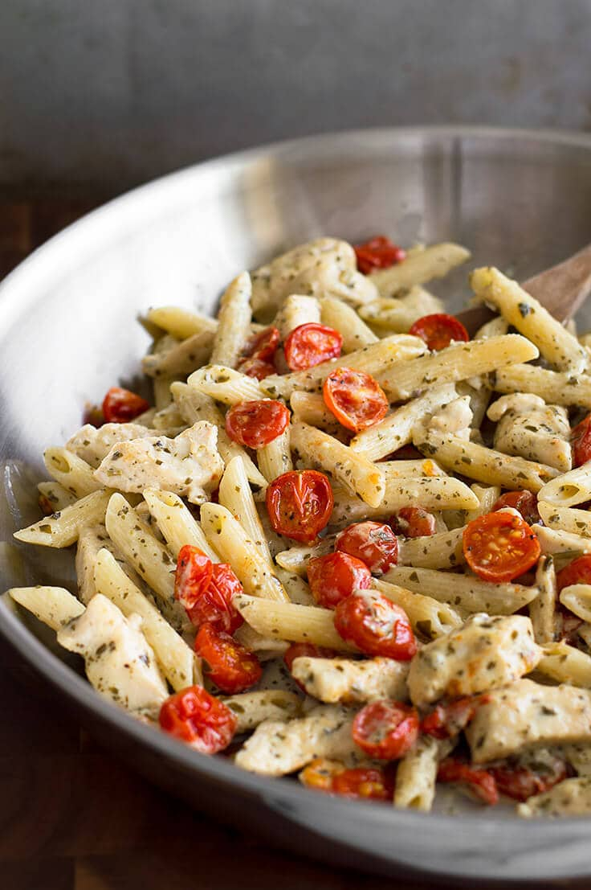
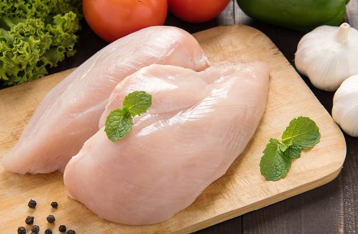
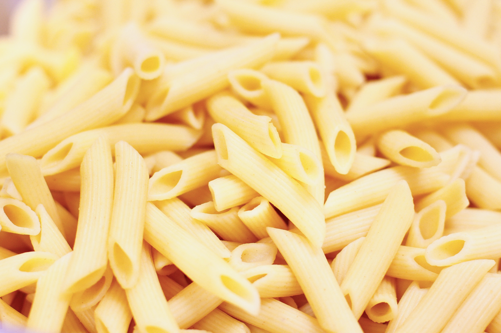
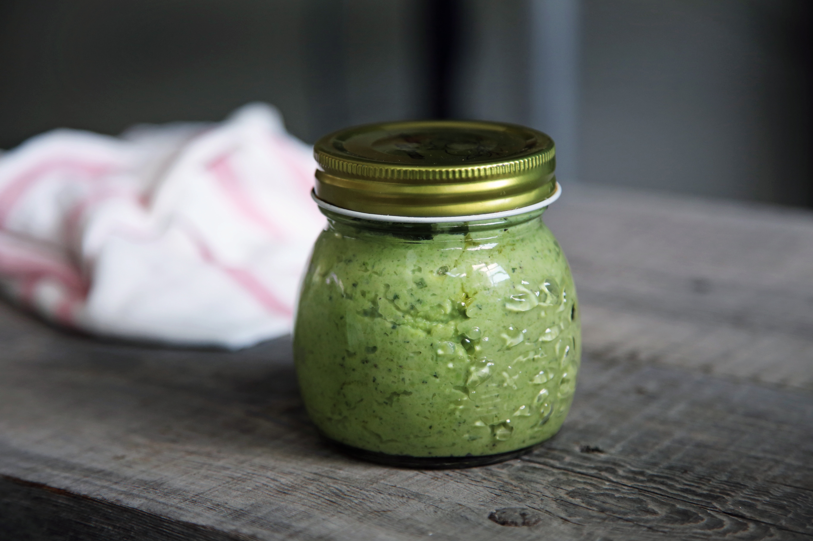
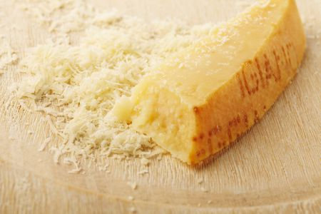
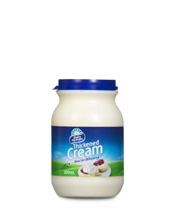
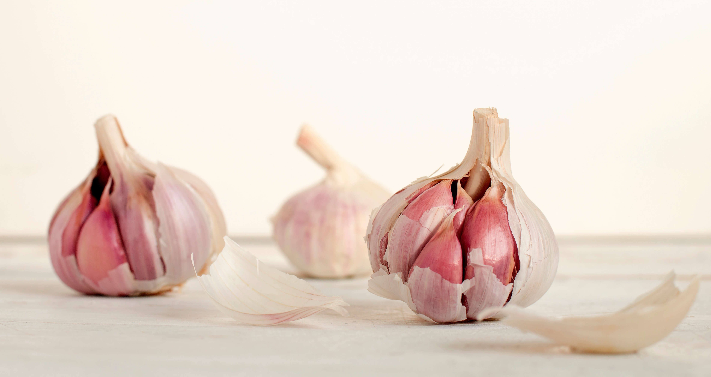

Chicken Pesto Pasta

Ingredients
- Chicken Breast
- Penne Pasta
- Pesto
-
 Cherry Tomatoes
Cherry Tomatoes
-  Parmesan Cheese
-  Thickened Cream
-  Garlic
- Salt
- Pepper
- Canola Oil
Method
- Cook Pasta in a saucepan of boiling salted water until al dente.
- Heat oil and add chicken and garlic to cook until light brown and cooked all the way through.
- Add cream, parmesan and pesto to the pan. Stir to combine and until heated through.
- Add the pasta and the chopped tomatoes and stir until combined and heated through.
Comments Section
Great meal even for lactose intolerant people like myself.
This is the greatest meal I've ever eaten. I never eat anything else. Thank you for changing my life.